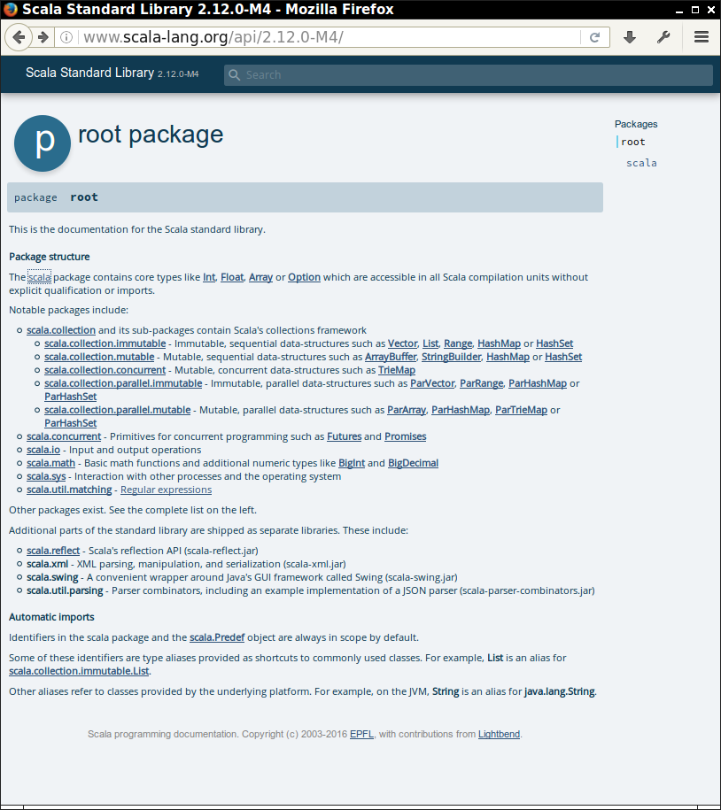

List Methodslength head tail isEmpty:: :+ ++ == != /: :\(n) take drop dropRight slice indexOf lastIndexOfreverse sorted sum max mincount exists dropWhile filter find findIndexOf forall partition remove span takeWhilemap reverseMap flatMap foreach sortreduceLeft reduceRight foldLeft foldRightintersection union zip zipAll zipWithIndex mkString:: appends in front, :+ in back
3 :: List(1, 2) is List(3, 1, 2) List(1, 2) :+ 3 is List(1, 2, 3)
++ concatenate lists
List(1, 2) ++ List(3, 4) is List(1, 2, 3, 4) // same as :::
== and != compare lists
List("Hello", "World") == List("Hel" + "lo", "Wor" + "ld")
/: and :\ later(1 + 2) * 3 1 + (2 * 3)
1 - 2 - 3 mean
(1 - 2) - 3 1 - (2 - 3)
a = b = 3
A-Z0-9()[]{}`'".,;(all letters) | ^ & < > = ! : + - * / % (all other special characters)
: are right associative; all others are left associative
a :: b :: Nil is a :: (b :: Nil)
() are used for indexed access—not []
List(17, 29)(1) is 29
slice takes sublist
List(2, 3, 5, 7).slice(1, 3) is List(3, 5)
Arguments to slice(from, to):
from is the first index to includeto is the first index ≥ from to excludedrop takemap, filter, reducedef randList(len : Int, n : Int) = (1 to len).map((x : Int) => gen.nextInt(n))
List(2,3,5,7).partition(isEven) is (List(2),List(3, 5, 7))
val myFirstTuple = (1, 3.14, "Fred")
(Int, Double, String)_1 (!), _2, _3
val second = myFirstTuple._2
val (first, second, _) = myFirstTuple
val scores = Map("Alice" -> 10, "Bob" -> 3, "Cindy" -> 8)
-> operator makes pairs. "Alice" -> 10 is the same as ("Alice", 10)val alicesScore = scores("Alice")
// They don't call it a map for nothing
val fredsScore = scores.getOrElse("Fred", 0)
val newScores = scores + ("Bob" -> 10, "Fred" -> 7)
val newerScores = newScores - "Alice" // Remove key and value
flatMaps, it is easy to form all pairs (x, 0):
val s = (1 to 4).toList
s.map(x => (x, 0))
// List((1, 0), (2, 0), (3, 0), (4, 0))
map twice:
s.map(y => s.map(x => (x, y))) // List(List((1,1), (2,1), (3,1), (4,1)), // List((1,2), (2,2), (3,2), (4,2)), // List((1,3), (2,3), (3,3), (4,3)), // List((1,4), (2,4), (3,4), (4,4)))
flatMap instead:
s.flatMap(y => s.map(x => (x, y))) // List((1, 1), (1, 2), (1, 3), (1, 4), (2, 1), (2, 2), ..., (4, 4))
List(a, b, c) is
a + b + c = 0 + a + b + c = ((0 + a) + b) + c
foldLeft or the /: operator
def sum(lst: List[Int]) = (0 /: lst) ((x, y) => x + y)
/: indicates the tree shape
a+b+c
/ \
a+b c
/ \
a b
/ \
0 a
def fac(n : Int) = (1 /: (1 to n)) {_ * _}
foldRight operator works right-to-left: a + (b + (c + 0))mkStringtoString produces the familiar List(1, 2, 3)1 | 2 | 3?
lst.mkString("|")
One fewer separator than elements
[1 | 2 | 3]?
lst.mkString("[", "|", "]")

lab5/report.txt inside the Git repo. Include the coder's name in the report! take and drop do? Give a brief explanation and an example for each.take and dropRight?span in Scaladoc. Make an example that demonstrates how span works. What is your example, and what value does it produce?span method returns a pair. Show how you can get at each of the elements in that pair./: folding operator to concatenate all strings in a List[String], separating them with spaces. For example, if you start with val lst = List("Hello", "Scala", "World"), you should produce an expression involving lst and /: that yields "Hello Scala World". (Hint: It is very easy to get " Hello Scala World". The challenge is to get rid of the first space. Consider the case of computing the maximum. Find a suitable function whose first argument is the maximum of all elements visited so far, and whose second argument is the next element.
What the code for your function maximum(lst : List[Int]) : Int? (You may assume that the list has length > 0)
def mystery(lst : List[Int]) = (List[Int]() /: lst) ((x, y) => if (y % 2 == 0) x else x :+ y)
Explain how the function works.
Here is a puzzle from a programmer web site:
Given an array of numbers, return the occurances [sic] of the number 1 in the array. So, if the array contains 1, 2, 11, 13 you would return 4 (as 11 contains two instances of 1).
List(1, 2, 11, 13). To get digits of one, it would be better to have strings. How do you get an array of strings? Hint: toString, mapcount method that takes a predicate. For example, (1 to 10).count(_ % 3 == 0) yields 3reduce, or, if you prefer, look at the scaladoc of Seq for a simpler way.)lst is a list of integers, how do you get the total number of digits of one?1 -> 2 -> 3? What is the type of the result?flatten that takes such a thing and turns it into an (Int, Int, Int). Use _1, _2val x,y,z = (1,2,3)
groupBy. Load all words from a dictionary into a list by calling
val words = io.Source.fromURL("http://horstmann.com/sjsu/spring2018/cs152/words").getLines.toList
What is words.groupBy(w => w.length)?myMap('a') yields all words that start with the letter a and so on.myMap.map(...)sorted doesn't work because Scala doesn't know how to sort the tuples. There are two other sort methods. One of them wants a function that maps into something that Scala does know how to sort—the easy choice for solving this exercise.